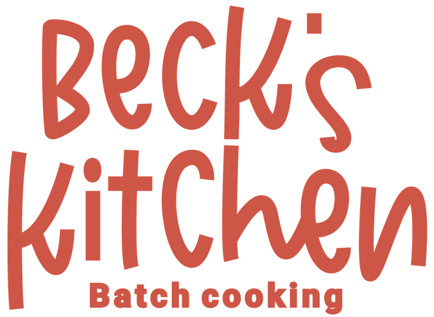
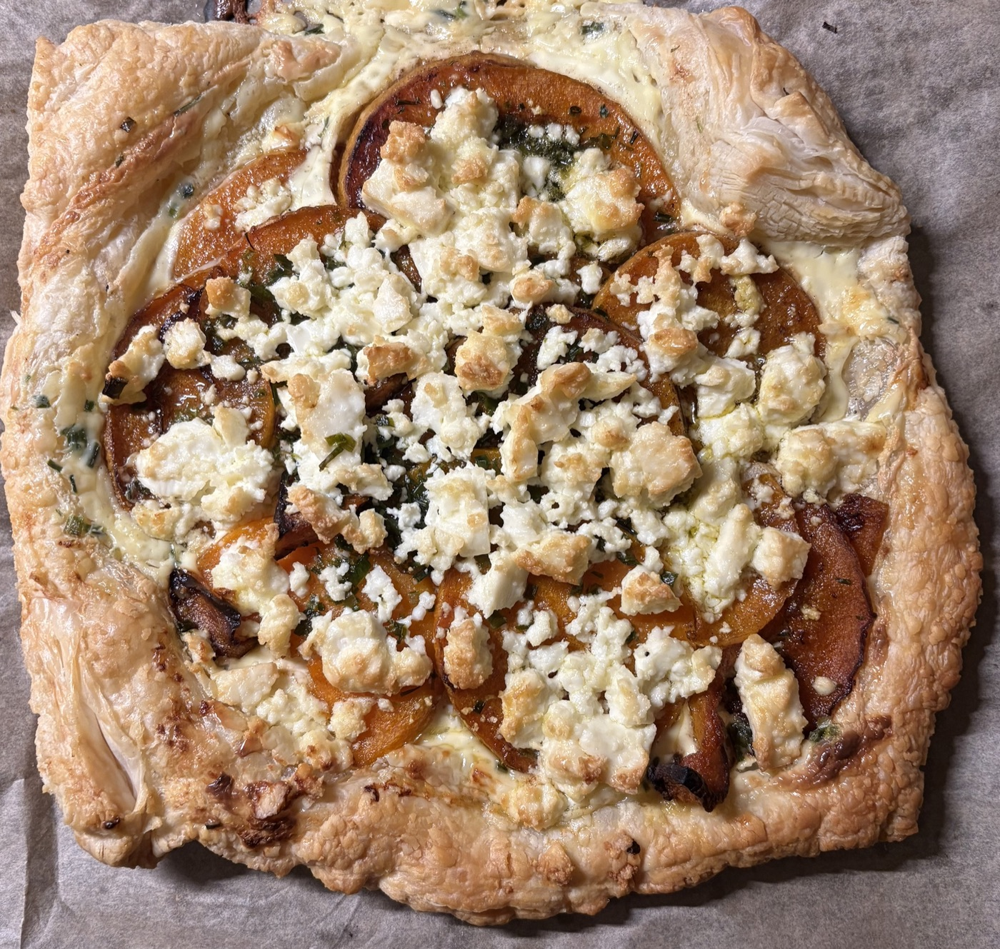
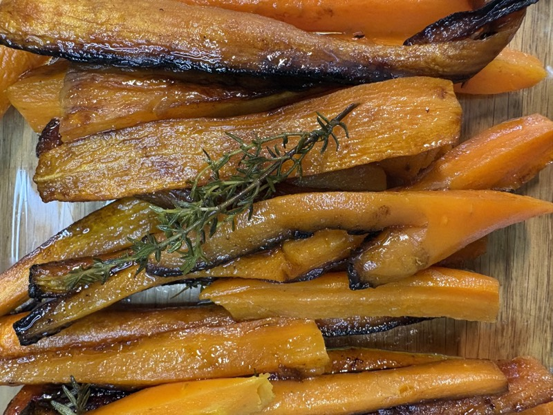
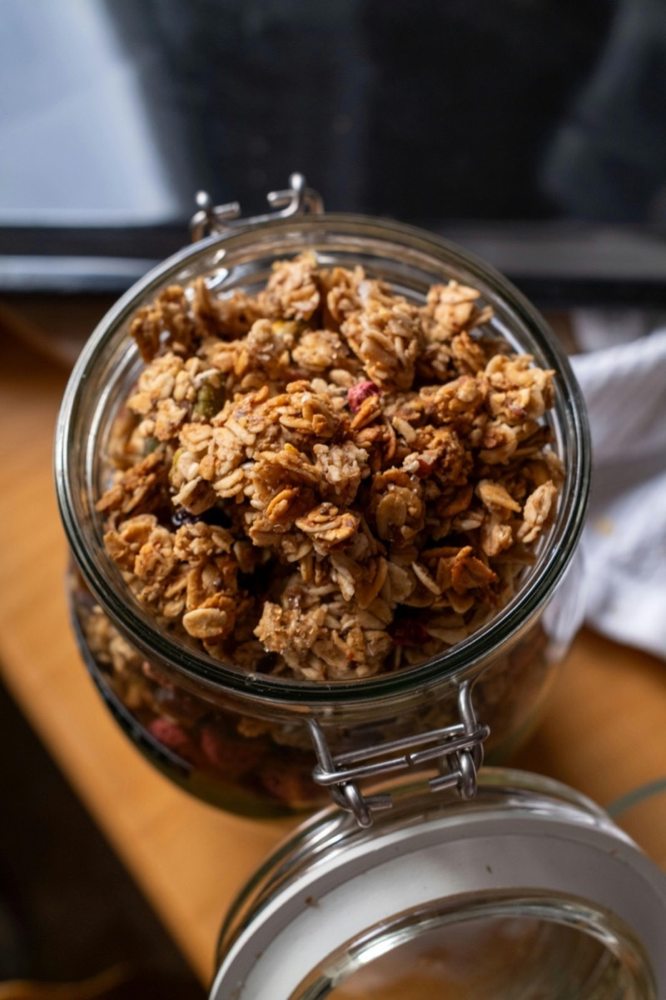
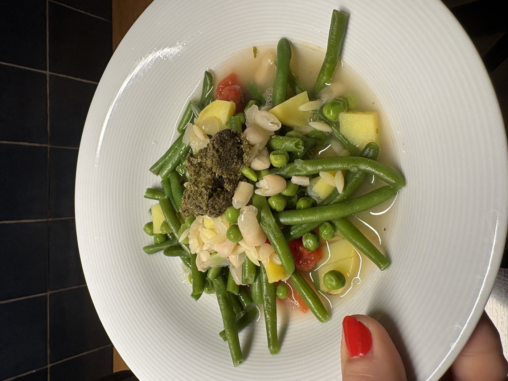
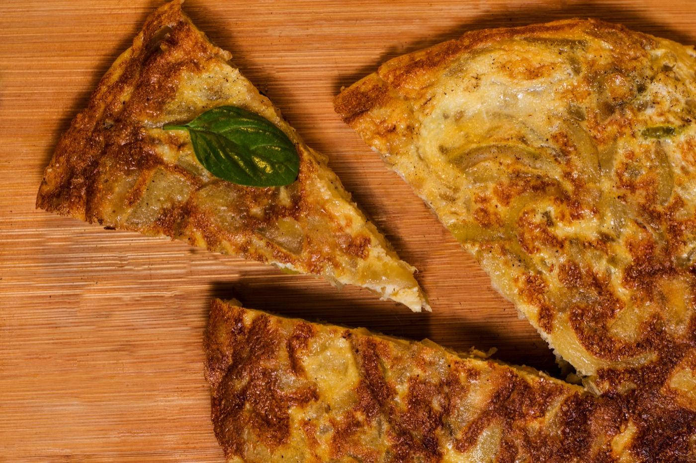
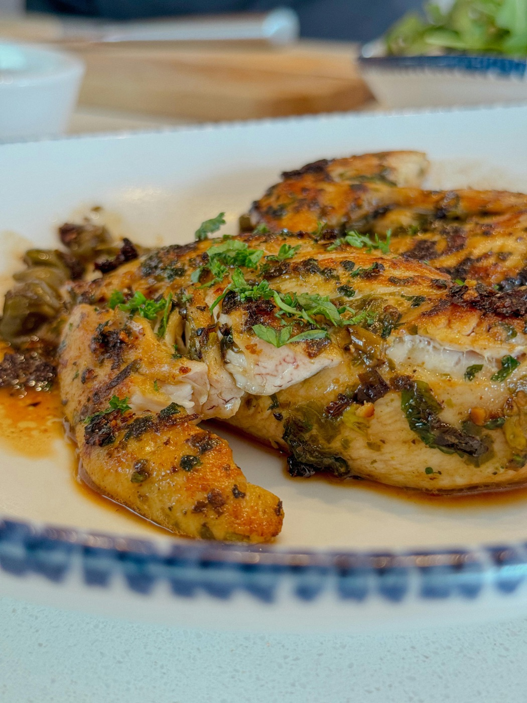

01
On se parle
Un appel de 30 minutes pour comprendre vos goûts, votre quotidien et vos contraintes. Nous vous présentons ensuite votre cuisinière.

Batch cooking à domicile · Yvelines (78) et Val d'Oise (95)

Le concept
Pas de livraison, pas de barquettes. Votre cuisinière vient chez vous, cuisine, et repart.
Un appel de 30 minutes pour comprendre vos goûts, votre quotidien et vos contraintes. Nous vous présentons ensuite votre cuisinière.
Votre cuisinière fait les courses si vous le souhaitez, cuisine les repas de la semaine et repart en laissant la cuisine propre.
Courses en option : + 50 € par prestation.Vous réchauffez ou composez vos repas en quelques minutes.
Ce que ça change
Deux à trois heures récupérées chaque semaine, et plus jamais « qu'est-ce qu'on mange ce soir ? »
Des produits frais, des recettes équilibrées, adaptées aux goûts et aux allergies de chacun.
Des petits pots de bébé aux lunchbox des adultes, chacun trouve son compte.
Service à la personne déclaré : la moitié du coût de la prestation, hors ingrédients, vous revient en crédit d'impôt.
Saison automne






Tarifs
Estimez votre prestation en quelques secondes, crédit d'impôt compris.
Tarif indicatif, basé sur nos prix conseillés. Votre cuisinière vous le confirme par un devis gratuit après l'appel découverte.
Le crédit d'impôt de 50 % s'applique dans la limite de 12 000 € de dépenses par an, majorée de 1 500 € par enfant à charge.
Nos cuisinières
Des cuisinières proches de chez vous, formées à la même méthode, qui cuisinent comme pour leur propre famille.
Chaque cuisinière est indépendante et intervient dans son secteur. Toutes suivent la méthode Beck's Kitchen et cuisinent à partir du même carnet de recettes, testées et vérifiées.



Questions
Nos cuisinières sont des organismes de services à la personne déclarés. 50 % du coût de la prestation vous est rendu en crédit d'impôt, dans la limite de 12 000 € de dépenses par an, majorée de 1 500 € par enfant à charge (15 000 € au plus). Vous recevez une attestation fiscale chaque année.
Vous faites les courses vous-même avec la liste que nous vous envoyons, ou votre cuisinière s'en charge pour 50 € par prestation, hors prix des ingrédients.
Oui. Tout est noté lors de l'appel découverte, pour chaque membre du foyer : allergies, régimes, goûts et dégoûts. Les menus sont construits à partir de là.
Une cuisine équipée classique : plaques, four, quelques casseroles. Pour la première session, nous apportons des boîtes de conservation si besoin. Pour les suivantes, il vous suffira d'en avoir assez chez vous.
De 2 à 4 jours au réfrigérateur selon les plats. Après chaque prestation, vous recevez les instructions de conservation.
Pour la première session, c'est préférable : nous faisons connaissance avec vous et avec votre cuisine. Ensuite, vous pouvez nous confier vos clés et nous travaillons en toute autonomie.
Oui : vous pouvez décaler une session jusqu'à 48 heures avant, et l'annuler jusqu'à une semaine avant.
Rendez-vous
Un premier échange de 30 minutes, en visio ou par téléphone, gratuit et sans engagement. Choisissez votre département pour réserver un créneau.
Vous hésitez ou préférez écrire ? Laissez-nous un message, nous vous recontactons.
Nous lirons votre message avant notre échange pour que nos 30 minutes soient vraiment utiles.
Merci de votre confiance. Nous revenons vers vous sous 24 h.
Rejoindre le réseau
Vous aimez cuisiner et cherchez une activité flexible, qui a du sens ? Lancez votre activité à votre compte, sans vous lancer seul·e.
Le nom Beck's Kitchen, son site et les demandes de clients de votre secteur.
Chaque étape d'une session, du premier appel au message de fin, déjà pensée pour vous.
Pour démarrer : statut, déclaration services à la personne, crédit d'impôt, premières sessions.
Un seul outil, sur téléphone ou tablette, qui vous suit du menu à la facture.
Un premier échange gratuit de 30 minutes, sans engagement.